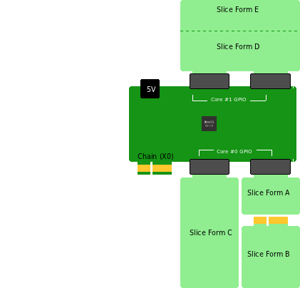

Slices are daughtercards which have gold plated PCI connector pads so as to connect to one or two of the edge connectors on the core board. Most slices have minimal component count, with the overall size of the slice card being mainly determined by whether the IO requirements require the use of both X and Y connectors, and the amount of other connectors is requires (e.g. for USB, ethernet, audio, headers, modules and so on).
Accordingly Slices are defined in one of five forms as follows
| Form | Slots Used | Form Factor | Approximate Dimensions(when plugged in) |
|---|---|---|---|
| A | 1 | Half Length | 38mm x 24mm |
| B | 1 | Full Length | 38mm x 56mm |
| C | 1 | Double Length | 38mm x 100mm |
| D | 2 | Half Length | 80mm x 24mm |
| E | 2 | Full Length | 80mm x 45mm |
The diagram below shows the five slice forms and how they relate to the core boards.

Most slice cards will be easily implemented in two layers, using simple University or hobbyiest PCB manufacturing facilities, although there may be occcasions when many components need to be crammed into a small space of complex chips are used in which case four layer slice cards can be used. No connectors are needed, and unless many insertions are planned there wouldn’t be any need to use hard gold plating for the connector pads.
There is nothing to stop slices from having their own shields, as shown in the diagram above (generic accessory slice with a capactiive touch shield on top).